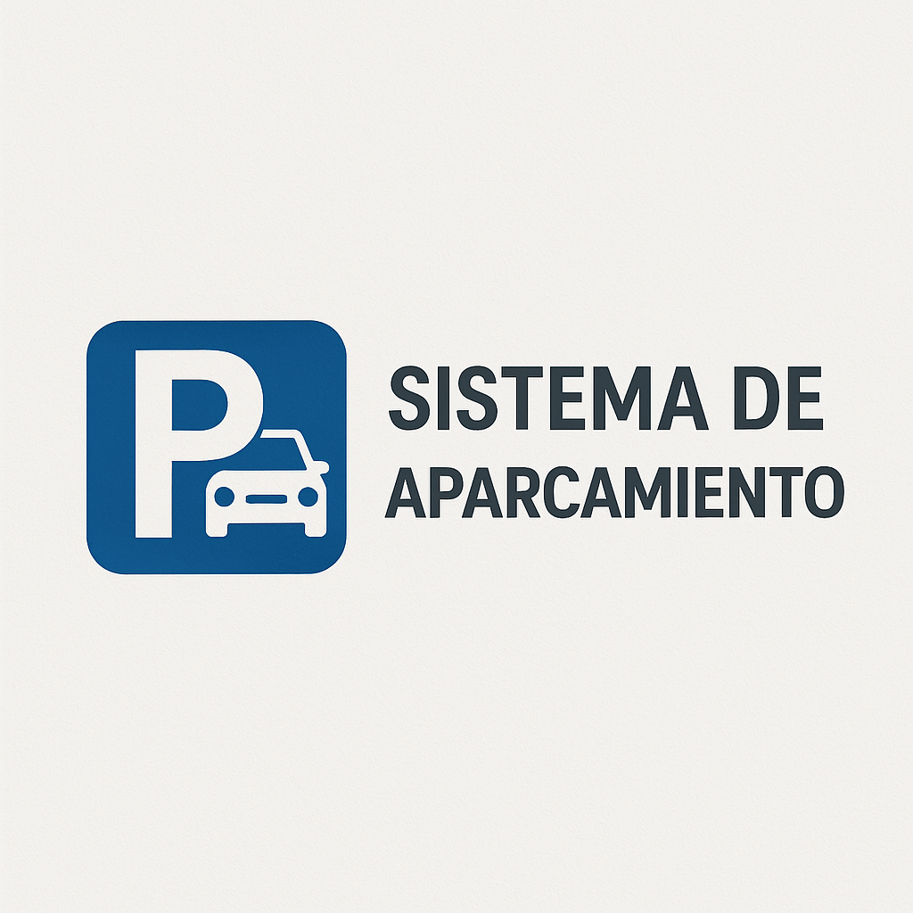

Juan Ramon
Moreno Bravo
Frontend Engineer
React · Angular · Vue.js · TypeScript · IA en producción

Sobre mí
Soy Juan Ramon Moreno Bravo, Frontend Engineer con 2 años entregando productos reales — no demos de tutorial. He trabajado con instituciones de salud pública, consultoras corporativas y clientes freelance con deadlines reales.
Mi stack principal es React, Angular y Vue.js con TypeScript. Lo que me diferencia: integro IA generativa en producción (Gemini API), optimizo Core Web Vitals y entrego código que escala, no solo que funciona.
Busco un equipo donde el frontend importe de verdad — donde la velocidad, la accesibilidad y la experiencia de usuario sean prioridad, no un afterthought.
Stack Técnico
Proyectos Destacados
Estudio Genius
Plataforma académica con auth, gestión de tareas y asistente IA. Tomé la decisión de integrar Gemini API directamente en el cliente para minimizar latencia — está en producción real con usuarios activos.

Taller Mecánico — App Operativa
Sistema de gestión de órdenes de trabajo, inventario de refacciones y clientes desplegado en producción. Construido sobre Google Sheets + AppSheet — cero costo de infraestructura para el cliente.
Canal de Denuncias — ARH
Plataforma corporativa para gestión de denuncias internas. Implementé accesibilidad WCAG, atajos de teclado y diseño responsive — desplegada y usada activamente por el equipo de RH.

Sistema de Aparcamiento
App desktop para gestión de espacios, vehículos y pagos con panel de administración. Decidí usar Java Swing para garantizar funcionamiento offline sin dependencias de red en el estacionamiento.
Sistema de Inventario — Salud Pública
Sistema web con arquitectura MVC para la Jurisdicción Sanitaria Núm. 10. Automatizó reportes manuales y redujo los tiempos de gestión un 20% en el primer mes.
Café Bloom — Landing 3D
Landing con estética clay 3D, carrito interactivo, filtros de menú y modo día/noche. Usada como demo de capacidades frontend para clientes de diseño.
Nike Store — Vue.js
E-commerce con carrito interactivo, filtros de productos y diseño responsivo. Construido en Vue 3 Composition API para demostrar dominio del framework más allá de React.
Sitio Web Servicios Tech
Landing profesional para empresa de servicios tecnológicos con deployment real. Optimicé imágenes y assets logrando carga bajo 2s en conexión móvil.
App de Presupuesto
Gestión de ingresos y gastos con estadísticas visuales en tiempo real. Proyecto personal para practicar manejo de estado complejo y visualización de datos sin librerías externas.
Experiencia Laboral
Frontend Developer & Web Optimizer
ARH Consultores · Jóvenes Construyendo el Futuro · Tehuacán, Puebla
- Rediseño completo de arhconsultores.com y arhbusinessconsulting.com — nueva arquitectura visual, tipografía corporativa y sistema de colores desde cero
- Construí y desplegué canal de denuncias corporativo en producción — primer sistema interno de este tipo en la empresa
- Reduje tiempo de carga mediante compresión de imágenes, minificación CSS/JS y eliminación de plugins innecesarios
- Implementé accesibilidad WCAG: atajos de teclado, contraste, navegación por teclado para usuarios con visibilidad reducida
- SEO on-page: jerarquía de encabezados, metadatos estructurados, mejora de indexación orgánica
🏆 Dos sitios corporativos rediseñados + producto en producción en menos de 6 meses
Pasante de Desarrollo de Software
Jurisdicción Sanitaria Núm. 10 · SSA · Tehuacán, Puebla
- Diseñé y desarrollé desde cero sistema web de control de inventarios para institución de salud pública — primer sistema digital del área
- Automaticé generación de reportes que antes se hacían manualmente en Excel, eliminando ~3h de trabajo administrativo semanal
- Reduje tiempos de gestión de inventario un 20% en el primer mes de uso
🏆 Primera experiencia entregando software real a institución gubernamental bajo restricciones reales
Desarrollador Web Freelance
Independiente · Tehuacán, Puebla
- Entregué +5 sitios web a clientes reales con deadlines y pagos reales — comercios locales, servicios y landing pages
- Aprendí a gestionar expectativas, presupuestos y cambios de alcance directamente con el cliente sin intermediarios
- Reduje tiempos de carga un 35% en promedio mediante optimización de assets, lazy loading y buenas prácticas de rendimiento
- Implementé MySQL para gestión de contenido dinámico en sitios con catálogos y formularios
🏆 Base real de clientes pagando — aprendí más en estos 2 años que en cualquier curso
Hablemos.
Disponible para empleo remoto o híbrido · Puebla / CDMX · Respondo en menos de 24h